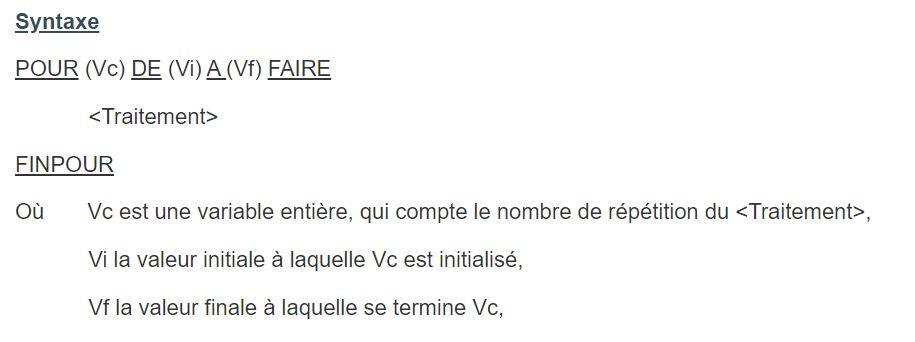
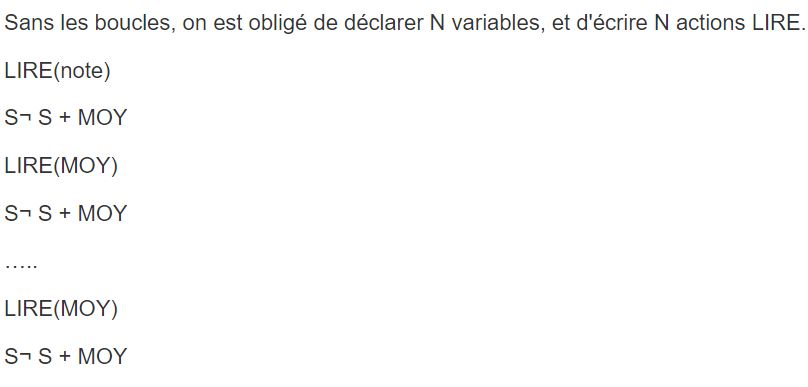
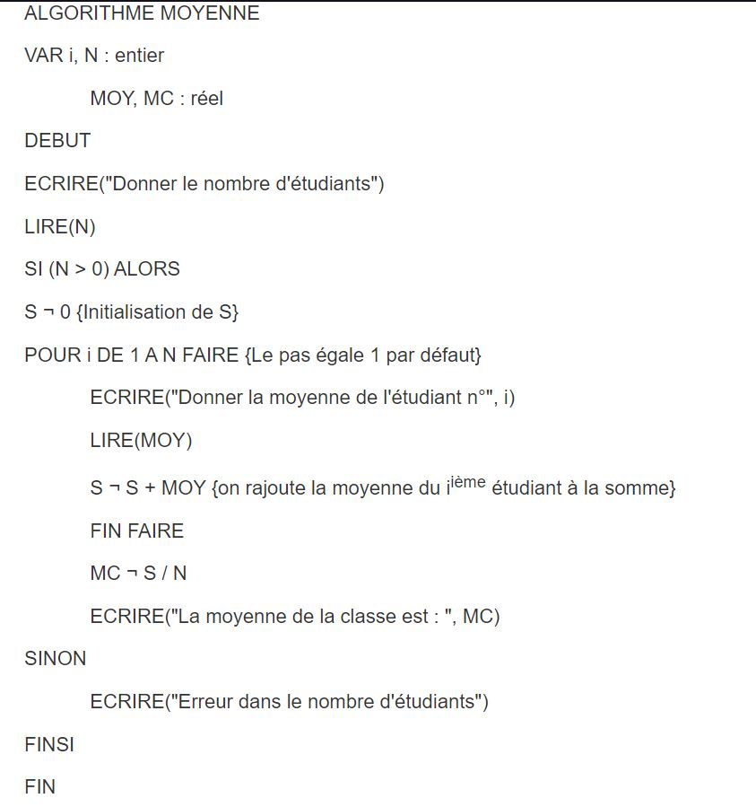
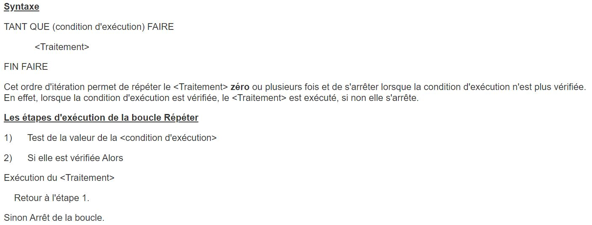

Les boucles repetitives
1.1. Introduction
Dans les problèmes quotidiens, on ne traite pas uniquement des séquences d'actions, sous ou sans conditions, mais il peut être fréquent d'être obligé d'exécuter un traitement (séquence d'actions), plusieurs fois. En effet, pour saisir les N notes d'un étudiant et calculer sa moyenne, on est amené à saisir N variables, puis faire la somme et ensuite diviser la somme par N. Cette solution nécessite la réservation de l'espace par la déclaration des variables, et une série de séquences d'écriture/lecture. Ce problème est résolu à l'aide des structures répétitives. Celles ci permettent de donner un ordre de répétition d'une action ou d'une séquence d'actions une ou plusieurs fois.
1.2. La boucle POUR
Cette structure exprime la répétition d'un traitement un nombre de fois.

Application
Ecrire l'algorithme qui permet de saisir les moyennes des N étudiants de la classe Informatique et de calculer la moyenne générale de la classe.

La boucle POUR donne l'ordre à la machine d'itérer les deux actions N fois.
Donc le compteur varie de 1 jusqu'à N avec un pas de 1.

Remarque Juste Avant le FIN FAIRE, le changement de la valeur de i se fait automatiquement.
(i tinzed 1 fi kol mara lin tousel akber mil N bache to8reg)
1.3. La boucle TANTQUE
La structure TantQue, dite aussi boucle TantQue exécute un même bloc d'instruction tant que la condition spécifiée dans l'algorithme est vraie. Une fois cette condition là devient fausse alors on quitte la boucle pour poursuivre l'exécution du reste du traitement.

- Remarques ! :
- lien ici (VEDIO!!) POUR expliquer
1. Dans cette boucle, le traitement peut ne pas être exécuté aucune fois, c'est lorsque la condition d'exécution est à faux dés le départ.

2.1 Opérateurs boolen

2.2 Opérateurs sous la chaine
DATE:6/20/2022 :11:43 | | Posted by rafed link